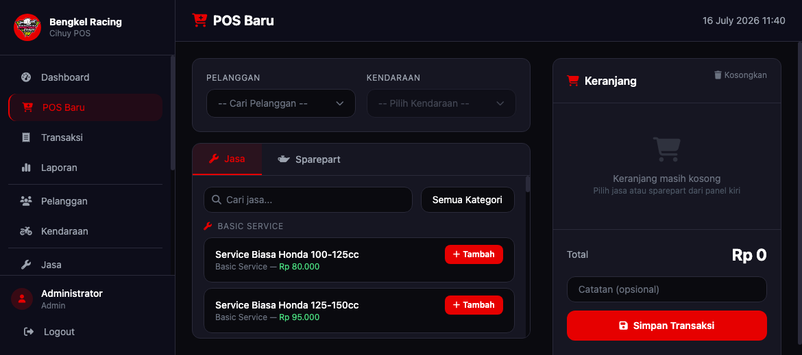
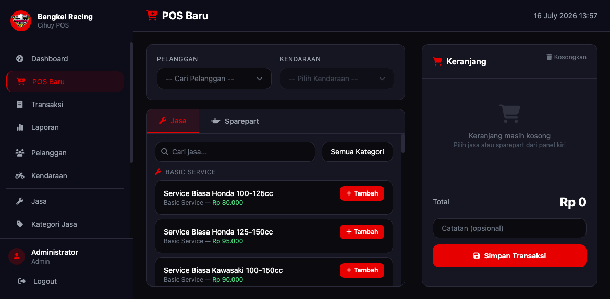
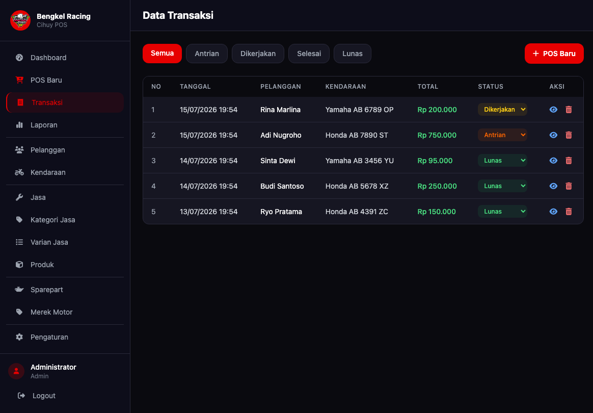
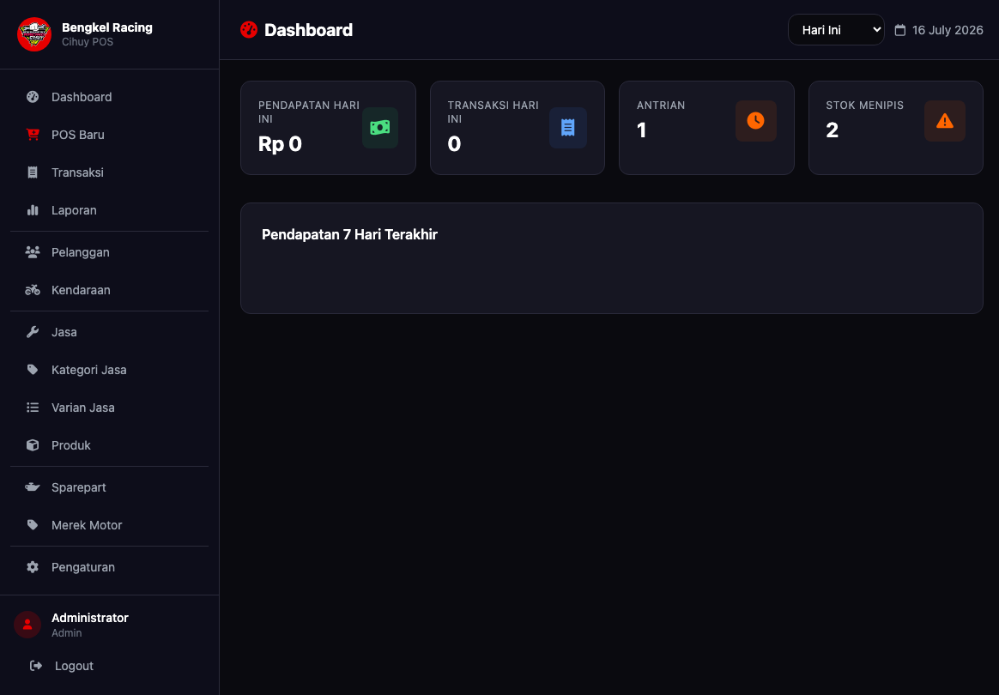

Sistem POS (Point of Sales) Bengkel adalah aplikasi berbasis web yang dirancang untuk mengelola transaksi jasa perbaikan dan penjualan suku cadang (sparepart) pada sebuah bengkel. Aplikasi ini mempermudah pencatatan pelanggan, kendaraan, hingga proses transaksi secara real-time dengan fitur keranjang belanja yang dinamis.
Fitur Utama:




Berikut adalah struktur database utama (ERD / Relasi Tabel):
erDiagram
USERS {
int id PK
varchar username
varchar password
varchar nama
enum role
}
PELANGGAN {
int id PK
varchar nama
varchar no_telp
text alamat
}
KENDARAAN {
int id PK
int id_pelanggan FK
varchar plat_no
varchar model
}
TRANSAKSI {
int id PK
varchar no_transaksi
int id_pelanggan FK
int id_kendaraan FK
decimal total
text catatan
}
TRANSAKSI_JASA {
int id PK
int id_transaksi FK
int id_varian_jasa FK
}
TRANSAKSI_SPAREPART {
int id PK
int id_transaksi FK
int id_sparepart FK
int qty
decimal harga
}
PELANGGAN ||--o{ KENDARAAN : "memiliki"
PELANGGAN ||--o{ TRANSAKSI : "melakukan"
KENDARAAN ||--o{ TRANSAKSI : "diservis"
TRANSAKSI ||--o{ TRANSAKSI_JASA : "mencakup"
TRANSAKSI ||--o{ TRANSAKSI_SPAREPART : "membeli"
Struktur ini mendukung pencatatan yang terintegrasi antara data master dan data transaksi harian bengkel.